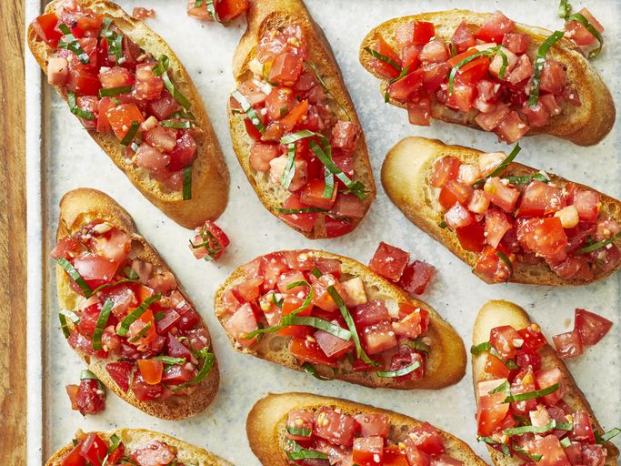

香醋烤面包
中文翻译链接
描述
意式烤面包（发音为 brew-SKET-tah）是一种意大利开胃菜或开胃菜，以烤面包或烤面包为底。然后将面包温热地端上桌，上面可以浇上配料，也可以在旁边浇上配料，这样每个人都可以制作自己的意式烤面包。意式烤面包是一种手拿式小吃，大小适中，可以吃一两口。

原料
- 1 条 法式面包，切成 ¼ 英寸厚的薄片
- 1 汤匙 特级初榨橄榄油
- 8 罗马番茄（李子番茄），切丁
- ⅓ 杯 切碎的新鲜罗勒
- 1 盎司 新鲜磨碎的帕尔马干酪
- 2 瓣 大蒜，切碎
- 1 汤匙 优质香醋
- 2 茶匙 特级初榨橄榄油
- ¼ 茶匙 粗盐
- ¼ 茶匙 现磨黑胡椒
做法
- 收集所有原料
- 将烤箱预热至 400 华氏度（200 摄氏度）。
- 用 1 汤匙油轻轻刷在面包片的两面上，然后放在大烤盘上。烤面包直到呈金黄色，大约 5 到 10 分钟，中途翻转。
- 同时，将西红柿、罗勒、帕尔马干酪和大蒜放入碗中搅拌
- 加入香醋、 2 茶匙橄榄油、粗盐和胡椒粉
- 将番茄混合物舀到烤好的面包片上。
- 立即上桌享用吧